Buku kas di HP — pelatihan per tugas: fitur apa saja & cara mengisinya, dengan gambar asli dari aplikasi
Uang masuk, uang keluar, dan barang — tercatat rapi, bisa dipantau pimpinan
Urus santri: data, nabung, dan bayar-bayar. Contoh: santri nabung Rp10.000 langsung tercatat.
Jualan buku & alat tulis pakai kasir HP, stok berkurang sendiri.
Jualan makanan, gantian jaga tercatat, uang diserahkan rapi.
Sama seperti Kantin Umi — beda tim, beda laporan.
Tiap tugas beda isi HP-nya. Setelah ini tiap tugas dibahas fiturnya satu per satu
10 menu
Memantau & memberi izin
7 menu
Atur petugas & tutup buku
5 menu
Layani santri
14 menu
Atur toko & periksa
7 menu
Kasir & stok
Semua tugas caranya sama — kita praktik bareng sekarang
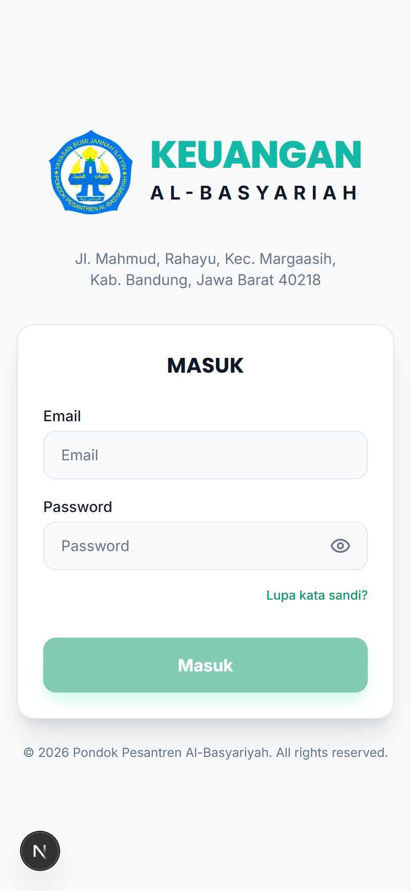
Layar masuk — persis seperti ini
Klik gambar untuk memperbesar
Tiga fitur yang paling sering dipakai
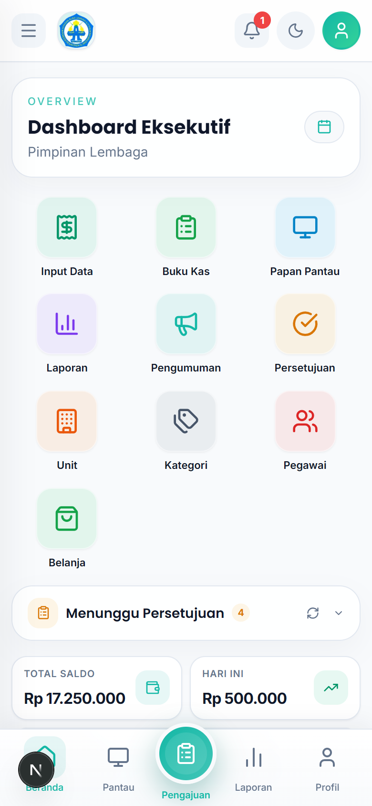
Halaman utama
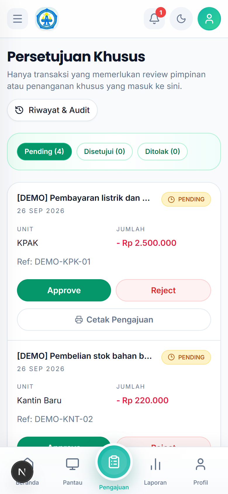
Daftar yang minta izin
Klik gambar untuk memperbesar
Empat fitur pendukung — cara mengisinya
Tiga fitur kerja harian
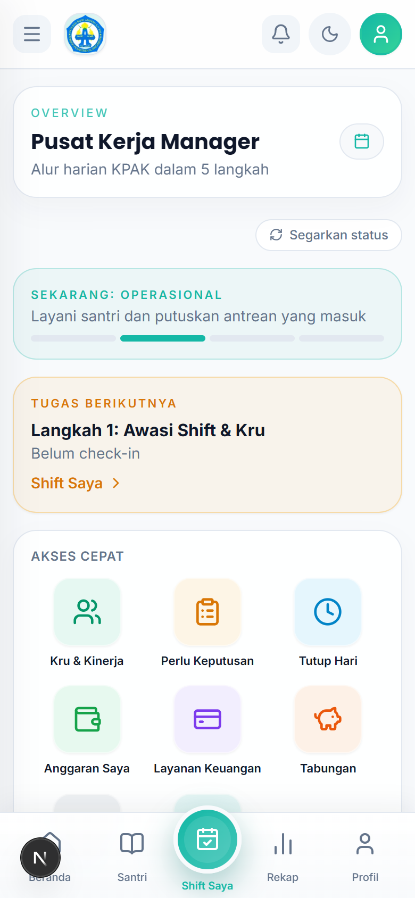
Kerja hari ini
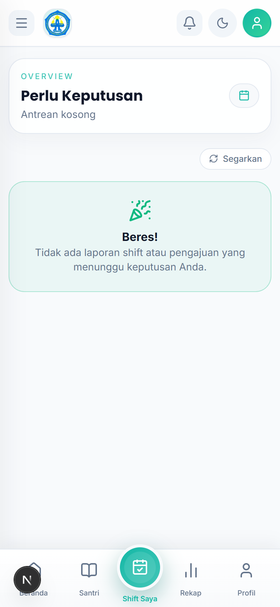
Perlu dicek
Klik gambar untuk memperbesar
Tiga fitur penutup hari
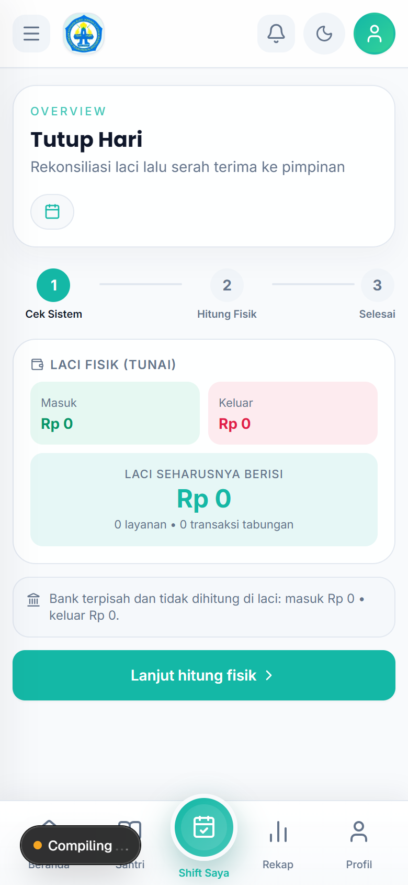
Tutup hari
Klik gambar untuk memperbesar
Tanpa absen, menu layanannya terkunci
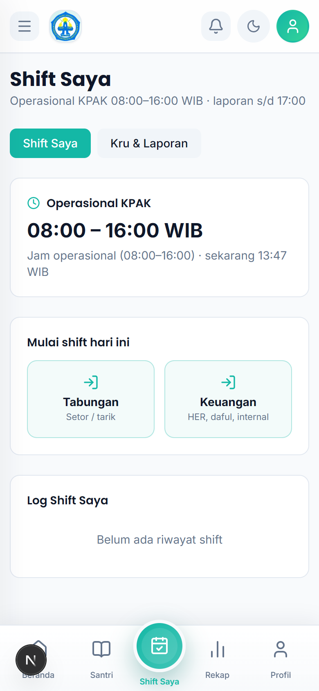
Absen: pilih Tabungan / Keuangan
Klik gambar untuk memperbesar
Dua fitur layanan — ucapkan nominalnya biar jelas
Aktif saat absen “Tabungan”.
Aktif saat absen “Keuangan”.
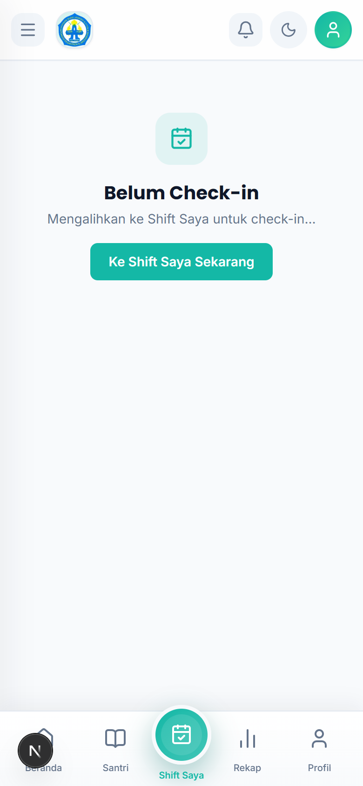
Layanan: nabung, ambil, bayar
Klik gambar untuk memperbesar · Kalau terkunci = belum absen / salah pilih layanan
Berlaku untuk Koperasi Buku, Kantin Umi, & Kantin Baru
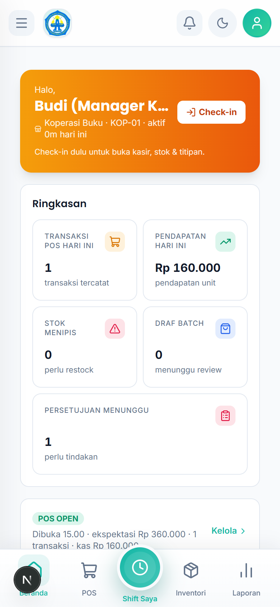
Halaman utama toko
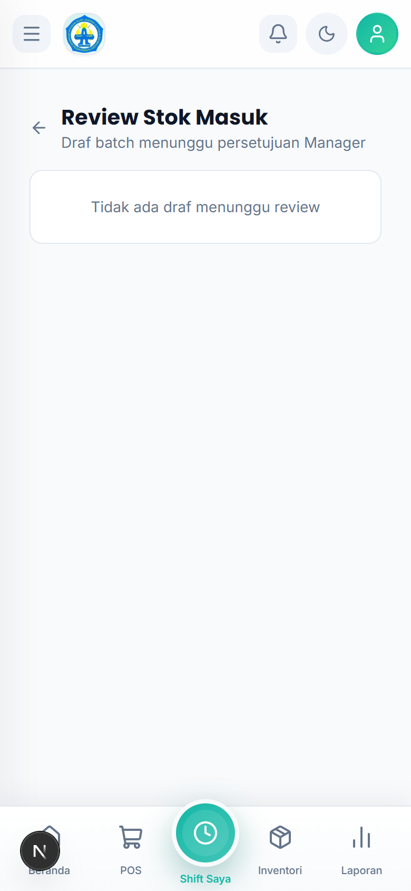
Periksa barang
Klik gambar untuk memperbesar
Tiga fitur pengelola toko
Kasir hanya bisa dibuka setelah absen
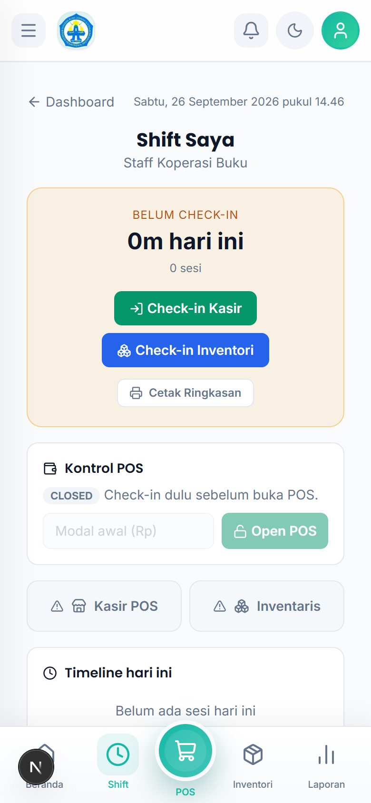
Absen dulu
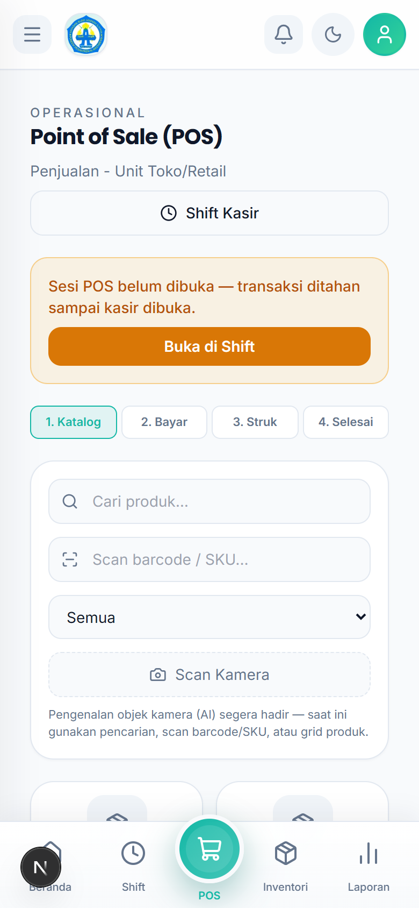
Kasir 4 langkah
Klik gambar untuk memperbesar
Catatan Anda masih draf sampai disahkan manager
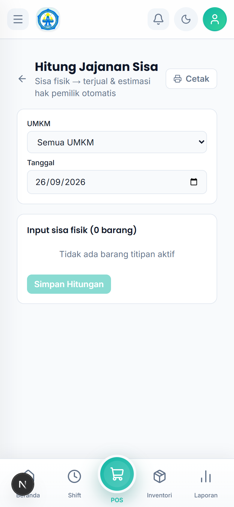
Hitung sisa
Klik gambar untuk memperbesar
Ikuti ceritanya dari kiri ke kanan
Hampir semua masalah berasal dari tiga hal ini
Belum absen = menu belum kebuka. Itu memang disengaja, HP Anda tidak rusak.
Kalau beda, tulis kenapanya dengan jujur. Jangan diubah biar pas.
Jangan pinjam akun teman. Semua tercatat atas nama — biar adil.
Tulis “UJI:” di depan setiap catatan latihan. Pakai nominal kecil.
Panduan lengkap + gambar ada di buku manual (docs/manual-pengguna).
Ada kendala? Sampaikan ke panitia hari ini juga.